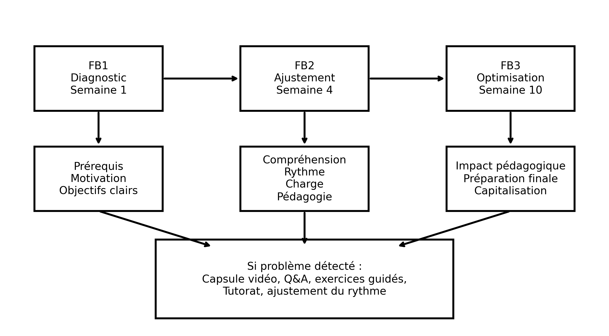
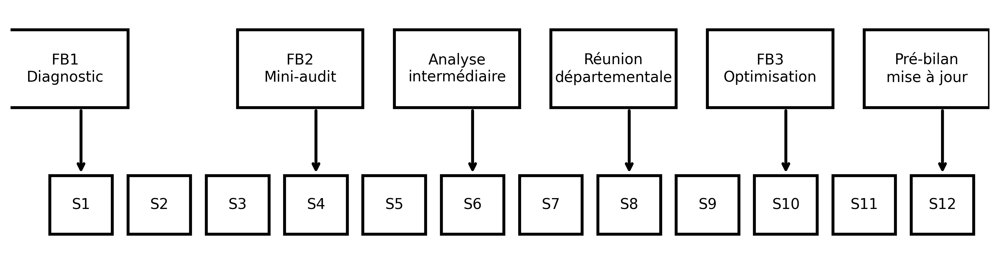
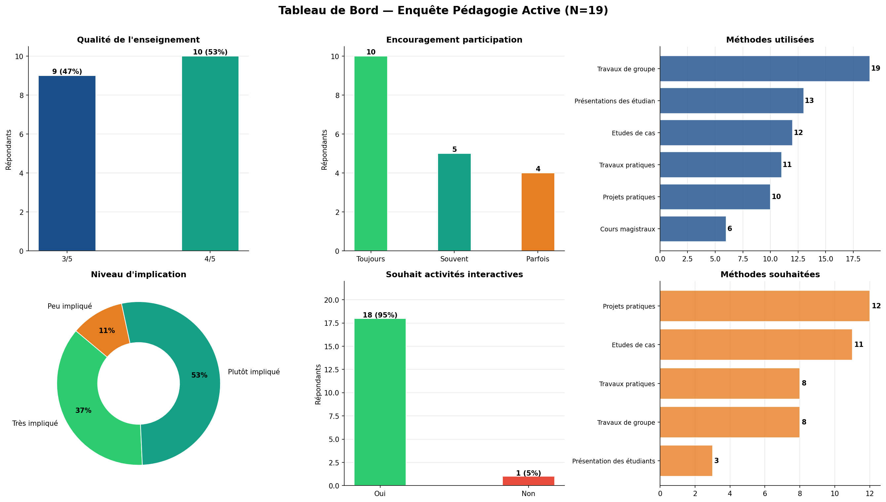

Enseignement
Vision pédagogique · Domaines · Récapitulatif · Supports
Ma vision
Mon enseignement s’appuie sur une articulation entre rigueur scientifique, applications concrètes et apprentissage progressif par la pratique. J’accorde une importance particulière à la compréhension des concepts fondamentaux, à leur mise en œuvre sur des cas réels et au développement de l’autonomie des étudiants. Cette démarche est pilotée par un système de feedback continu en trois temps — diagnostic, ajustement, optimisation — qui permet d’adapter le cours pendant le semestre plutôt que d’en constater les limites à son terme (voir l’onglet Feedback continu).
Domaines d’enseignement
<div class="domain-card" data-domain="Mathématiques et Statistiques">
<div class="domain-icon">∫</div>
<div class="domain-name">Mathématiques et Statistiques</div>
<div class="domain-count">17 modules</div>
</div>
<div class="domain-card" data-domain="Intelligence Artificielle">
<div class="domain-icon"><i class="bi bi-robot"></i></div>
<div class="domain-name">Intelligence Artificielle</div>
<div class="domain-count">16 modules</div>
</div>
<div class="domain-card" data-domain="Sciences des données">
<div class="domain-icon"><i class="bi bi-bar-chart-line"></i></div>
<div class="domain-name">Sciences des données</div>
<div class="domain-count">6 modules</div>
</div>
<div class="domain-card" data-domain="Encadrement et soutien">
<div class="domain-icon"><i class="bi bi-bullseye"></i></div>
<div class="domain-name">Encadrement et soutien</div>
<div class="domain-count">3 modules</div>
</div>Récapitulatif des enseignements
∫ Mathématiques et Statistiques — 17 module(s) · 49 ligne(s) · Algèbre, Analyse, Probabilités, Statistiques inférentielles, GLM, Logique, Recherche Opérationnelle
Intelligence Artificielle — 16 module(s) · 31 ligne(s) · Machine Learning, Deep Learning, NLP, Generative Computer Vision, Outillage ML
Sciences des données — 6 module(s) · 13 ligne(s) · Analyse des données, Data Mining, Programmation R/Python, Séries temporelles
Encadrement et soutien — 3 module(s) · 5 ligne(s) · Cours de soutien, Atelier Python, Gestion de projet
| Année | Module | Niveau | Classe | Groupes | EN | Charge | Coord. | Nouveau | École |
|---|---|---|---|---|---|---|---|---|---|
| 2016-2017 | Cours de soutien | Licence | — | 1 | FR | 15 h | ✓ | ESB | |
| 2016-2017 | Cours de soutien | Licence | — | 1 | FR | 15 h | ✓ | ESB | |
| 2017-2018 | Cours de soutien Mathématiques | Licence | — | 1 | FR | 9 h | ✓ | ESB | |
| 2017-2018 | Cours de soutien Statistiques inférentielles NOUVEAU | Licence | — | 1 | FR | 9 h | ✓ | ✓ | ESB |
| 2018-2019 | Cours de soutien Statistiques inférentielles | Licence | — | 1 | FR | 15 h | ✓ | ESB |
Ma vision du feedback continu
Je considère le feedback non pas comme une évaluation ponctuelle de fin de semestre, mais comme un instrument de pilotage pédagogique en temps réel. Mon système de feedback continu repose sur trois mesures structurées — FB1 Diagnostic (semaine 1), FB2 Ajustement (semaine 4) et FB3 Optimisation (semaine 10) — couplées à des seuils déclencheurs quantifiés et à des actions correctives rapides tracées dans une fiche dédiée (fiche ARC). L’objectif : détecter tôt les difficultés de compréhension, d’engagement ou de rythme, agir dans les deux semaines, et capitaliser chaque semestre dans le syllabus et la fiche module.
FB1 · Diagnostic — Semaine 1 Prérequis · Motivation · Objectifs clairs
FB2 · Ajustement — Semaine 4 Compréhension · Rythme · Charge · Pédagogie
FB3 · Optimisation — Semaine 10 Impact · Préparation finale · Capitalisation

Le dispositif sur un semestre (12 semaines)

| Moment | Outil | Action possible |
|---|---|---|
| Semaine 1 | Observation de l’enseignant · Feedback 1 (prérequis et motivations) | Ajuster le rythme |
| Semaine 4 | Mini audit pédagogique · Feedback 2 sur Blackboard | Coaching enseignant · Fiche ARC |
| Semaine 6 | Analyse des résultats intermédiaires (DS, mini-projet, taux d’engagement) avec le coordinateur du module | Séance de renforcement |
| Semaine 8 | Réunion départementale | Adapter le contenu · Ajuster la méthode |
| Semaine 10 | Feedback 3 · Discussion avec les étudiants · LMS analytics | Corrections finales · Fiche ARC |
| Semaine 12 | Pré-bilan | Mise à jour du syllabus / fiche module |
Boucles d’action correctives
Chaque problème détecté déclenche une réponse type dans les deux semaines :
| Problème détecté | Déclencheurs | Actions immédiates |
|---|---|---|
| Compréhension | < 60 % de réussite aux quiz · feedback « cours difficile » · baisse de participation | Capsule vidéo résumé · séance Q&A supplémentaire · exercices guidés · peer tutoring étudiants forts/faibles |
| Engagement | Absences en hausse · faible activité Blackboard · peu d’interaction en classe | Activité interactive dès la séance suivante · quiz live · mini-projet court · gamification simple |
| Rythme / surcharge | Feedback « charge élevée » · retards de remise des devoirs | Re-planifier les deadlines · fractionner le projet · fournir un template / exemple |
| Pédagogie enseignant | Feedback répété des étudiants · score d’observation pédagogique faible | Coaching pédagogique rapide · co-animation de séance · partage de bonnes pratiques |
Résultats de l’enquête pédagogie active (mars 2026)
Questionnaire anonyme sur les méthodes d’apprentissage — 10 questions, 19 répondants, mars 2026. Cette enquête ferme la boucle du feedback continu : elle mesure la perception des méthodes actives par les étudiants et oriente les actions correctives du semestre suivant. Rapport complet : Enquête Pédagogie Active (PDF)
3,5 / 5 Satisfaction globale (aucune note ≤ 2)
95 % souhaitent plus d’activités interactives
89 % se sentent impliqués dans leur apprentissage
100 % exposés aux travaux de groupe

AstucePoints forts
- Méthodes actives déjà bien installées (travaux de groupe : 100 %)
- Participation encouragée par la majorité des enseignants (79 % « toujours » ou « souvent »)
- 89 % des étudiants se sentent impliqués dans leur apprentissage
- Liaison théorie → pratique présente pour 85 % des répondants
AvertissementAxes d’amélioration retenus
- 95 % demandent plus d’interactivité → priorité n°1
- Renforcer projets pratiques et études de cas réels (≥ 60 % le souhaitent)
- Réduire le nombre de présentations étudiantes (saturation signalée)
- Orienter les examens vers la réflexion plutôt que la mémorisation
- Renforcer les outils professionnels (Python, Power BI, Oracle…)
AstuceDétail des résultats question par question
| # | Question | Résultat clé |
|---|---|---|
| Q1 | Qualité globale de l’enseignement | 3,5/5 en moyenne — notes 3 et 4 uniquement, aucun extrême |
| Q2 | Encouragement à la participation | 79 % « toujours » ou « souvent » |
| Q3 | Méthodes utilisées | Travaux de groupe 100 % · présentations 68 % · études de cas 63 % · cours magistraux 32 % |
| Q4 | Méthodes jugées les plus efficaces | Travaux pratiques 74 % · études de cas 58 % · cours magistraux derniers (21 %) |
| Q5 | Application théorie → pratique | 85 % « souvent » ou « toujours » |
| Q6 | Encouragement à la réflexion | 89 % « assez » ou « beaucoup » — marge de progrès sur la pensée critique |
| Q7 | Implication active en cours | 89 % impliqués · aucun « pas du tout impliqué » |
| Q8 | Souhait de plus d’interactivité | Oui : 95 % — variable la plus consensuelle |
| Q9 | Méthodes souhaitées davantage | Projets pratiques 63 % · études de cas 58 % · présentations 16 % |
| Q10 | Amélioration prioritaire (question ouverte) | Pratique & cas réels (11 rép.) · qualité > quantité · alignement marché du travail |
Mes annexes de feedback
Les quatre annexes ci-dessous constituent l’outillage opérationnel du système. Le document complet est téléchargeable : Système de feedback continu — document intégral avec annexes (PDF)
AstuceAnnexe 1 — Fiche Action Corrective Rapide (fiche ARC)
Template de traçabilité de chaque action corrective, garantissant le suivi et la mesure d’impact :
- Module / Enseignant / Semaine
- Problème détecté et source (feedback, quiz, observation)
- Action décidée et date de mise en place
- Résultat après 2 semaines
- Responsable du suivi
AstuceAnnexe 2 — Feedback 1 · Diagnostic (semaine 1)
Questionnaire de 8–10 questions rempli par l’étudiant, accès réservé aux présents de la première séance.
Objectifs : vérifier les prérequis réels · mesurer la motivation initiale · vérifier la compréhension des objectifs du module.
Structure : Bloc A — prérequis académiques (auto-évaluation, difficultés, besoin de rappels) · Bloc B — motivation et engagement (échelles 1→5) · Bloc C — clarté des objectifs et des attentes · Bloc D — projection (confiance de réussite, « ce qui pourrait m’aider le plus »).
Déclencheurs d’action : prérequis faibles > 25 % · motivation < 3,5 · objectifs clairs < 3.
AstuceAnnexe 3 — Feedback 2 · Ajustement (semaine 4)
Questionnaire de 8–10 questions sur Blackboard, accès réservé aux étudiants avec un taux de présence > 50 %.
Objectifs : vérifier la compréhension réelle · ajuster le rythme et la pédagogie · confirmer ou corriger le diagnostic des prérequis.
Structure : Bloc A — compréhension du contenu et principal obstacle · Bloc B — rythme et charge de travail · Bloc C — pédagogie (clarté des explications, utilité des supports) · Bloc D — suivi de l’évolution des prérequis · Bloc E — « quelle amélioration immédiate aiderait le plus ? ».
Déclencheurs d’action : compréhension < 3,5 · rythme « trop rapide » > 30 % · problème de prérequis persistant.
AstuceAnnexe 4 — Feedback 3 · Optimisation (semaine 10)
Questionnaire de 10–12 questions, accès réservé aux étudiants avec un taux de présence > 50 %.
Objectifs : mesurer l’impact pédagogique réel · vérifier la préparation à l’évaluation finale · capitaliser pour l’amélioration future.
Structure : Bloc A — acquisition des compétences et sentiment de préparation · Bloc B — méthodes pédagogiques (activité la plus utile : cours, TD/TP, projet, études de cas, quiz) · Bloc C — engagement et motivation à approfondir.
Les résultats alimentent les corrections finales, la fiche ARC et le pré-bilan de semaine 12 (mise à jour du syllabus et de la fiche module).
4 716
Heures cumulées
42
Modules distincts
10
Années actives
44
Nouveau module (lignes)
5
Cours en anglais
Heures par année et par domaine
Évolution du nombre de modules dispensés
Heatmap module × année (charge horaire)
Timeline d’enseignement par module
Nouveaux modules par année universitaire
| Année | Modules nouveaux ou refondus |
|---|---|
| 2016-2017 | Mathématiques 1, Mathématiques 2, Statistiques descriptives et Probabilités |
| 2017-2018 | Analyse des données avec SPSS, Cours de soutien Statistiques inférentielles, Logique Mathématique, Recherche Opérationnelle, Statistiques inférentielles |
| 2018-2019 | Les fondamentaux des mathématiques, Séries Temporelles |
| 2019-2020 | Algèbre 1, Algèbre 2, Analyse 2, Analyse statistique avec R, Probabilités et Statistiques, Programmation avec R |
| 2020-2021 | Algèbre 3, Analyse 4, Mathématiques appliquées à la gestion |
| 2021-2022 | Intégration et Probabilités, Modèles linéaires généralisés, Optimisation numérique, Probabilités, Statistiques, Statistiques inférentielles |
| 2022-2023 | Analyse des données, Apprentissage Statistique, Deep Learning, Fondements de la théorie de la décision, Introduction Data Science, Programmation Python 2, Programmation Python 3 |
| 2023-2024 | Intelligence Artificielle, Outillage Machine Learning, Programmation Python 3 |
| 2024-2025 | Generative Computer Vision, Machine Learning (non supervisé) |
| 2025-2026 | Atelier de programmation, Data Mining |
∫ Mathématiques et Statistiques — 17 module(s) · 15 avec repository GitHub
Statistiques inférentielles
<a href="modules/statistiques-inferentielles.html" class="resource-btn btn-view" title="Fiche module">📋 Fiche</a> <a href="https://github.com/Aymenbenbrik/StatistiquesInferentiellesLicence" target="_blank" class="resource-btn btn-download" title="https://github.com/Aymenbenbrik/StatistiquesInferentiellesLicence"><i class="bi bi-github"></i> Aymenbenbrik/StatistiquesInferentiellesLicence</a> <a href="https://github.com/Aymenbenbrik/StatistiquesInf-rentielles" target="_blank" class="resource-btn btn-download" title="https://github.com/Aymenbenbrik/StatistiquesInf-rentielles"><i class="bi bi-github"></i> Aymenbenbrik/StatistiquesInf-rentielles</a>Probabilités et Statistiques
<a href="modules/probabilites-et-statistiques.html" class="resource-btn btn-view" title="Fiche module">📋 Fiche</a> <a href="https://github.com/Aymenbenbrik/StatistiquesDescriptivesProbabilites" target="_blank" class="resource-btn btn-download" title="https://github.com/Aymenbenbrik/StatistiquesDescriptivesProbabilites"><i class="bi bi-github"></i> Aymenbenbrik/StatistiquesDescriptivesProbabilites</a> <a href="https://github.com/Aymenbenbrik/AnalyseStatistiqueR" target="_blank" class="resource-btn btn-download" title="https://github.com/Aymenbenbrik/AnalyseStatistiqueR"><i class="bi bi-github"></i> Aymenbenbrik/AnalyseStatistiqueR</a>Statistiques descriptives et Probabilités
<a href="modules/statistiques-descriptives-et-probabilites.html" class="resource-btn btn-view" title="Fiche module">📋 Fiche</a> <a href="https://github.com/Aymenbenbrik/StatistiquesDescriptivesProbabilites" target="_blank" class="resource-btn btn-download" title="https://github.com/Aymenbenbrik/StatistiquesDescriptivesProbabilites"><i class="bi bi-github"></i> Aymenbenbrik/StatistiquesDescriptivesProbabilites</a>Algèbre 1
<a href="modules/algebre-1.html" class="resource-btn btn-view" title="Fiche module">📋 Fiche</a> <a href="https://github.com/Aymenbenbrik/Algebre1-2022-" target="_blank" class="resource-btn btn-download" title="https://github.com/Aymenbenbrik/Algebre1-2022-"><i class="bi bi-github"></i> Aymenbenbrik/Algebre1-2022-</a>Analyse 4
<a href="modules/analyse-4.html" class="resource-btn btn-view" title="Fiche module">📋 Fiche</a> <a href="analyse-4.html" class="resource-btn btn-view" title="Page pédagogique détaillée">📖 Pédagogique</a> <a href="https://github.com/Aymenbenbrik/Analyse4" target="_blank" class="resource-btn btn-download" title="https://github.com/Aymenbenbrik/Analyse4"><i class="bi bi-github"></i> Aymenbenbrik/Analyse4</a>Algèbre 2
<a href="modules/algebre-2.html" class="resource-btn btn-view" title="Fiche module">📋 Fiche</a> <a href="algebre-2.html" class="resource-btn btn-view" title="Page pédagogique détaillée">📖 Pédagogique</a> <a href="https://github.com/Aymenbenbrik/Algebre2" target="_blank" class="resource-btn btn-download" title="https://github.com/Aymenbenbrik/Algebre2"><i class="bi bi-github"></i> Aymenbenbrik/Algebre2</a>Mathématiques 1
<a href="modules/mathematiques-1.html" class="resource-btn btn-view" title="Fiche module">📋 Fiche</a> <a href="https://github.com/Aymenbenbrik/Mathematiques1" target="_blank" class="resource-btn btn-download" title="https://github.com/Aymenbenbrik/Mathematiques1"><i class="bi bi-github"></i> Aymenbenbrik/Mathematiques1</a>Algèbre 3
<a href="modules/algebre-3.html" class="resource-btn btn-view" title="Fiche module">📋 Fiche</a> <a href="algebre-3.html" class="resource-btn btn-view" title="Page pédagogique détaillée">📖 Pédagogique</a> <a href="https://github.com/Aymenbenbrik/Algebre3" target="_blank" class="resource-btn btn-download" title="https://github.com/Aymenbenbrik/Algebre3"><i class="bi bi-github"></i> Aymenbenbrik/Algebre3</a>Mathématiques 2
<a href="modules/mathematiques-2.html" class="resource-btn btn-view" title="Fiche module">📋 Fiche</a> <a href="https://github.com/Aymenbenbrik/Mathematiques2" target="_blank" class="resource-btn btn-download" title="https://github.com/Aymenbenbrik/Mathematiques2"><i class="bi bi-github"></i> Aymenbenbrik/Mathematiques2</a>Intégration et Probabilités
<a href="modules/integration-et-probabilites.html" class="resource-btn btn-view" title="Fiche module">📋 Fiche</a> <a href="https://github.com/Aymenbenbrik/Probabilites" target="_blank" class="resource-btn btn-download" title="https://github.com/Aymenbenbrik/Probabilites"><i class="bi bi-github"></i> Aymenbenbrik/Probabilites</a>Probabilités
<a href="modules/probabilites.html" class="resource-btn btn-view" title="Fiche module">📋 Fiche</a> <a href="probabilites.html" class="resource-btn btn-view" title="Page pédagogique détaillée">📖 Pédagogique</a> <a href="https://github.com/Aymenbenbrik/Probabilites" target="_blank" class="resource-btn btn-download" title="https://github.com/Aymenbenbrik/Probabilites"><i class="bi bi-github"></i> Aymenbenbrik/Probabilites</a>Analyse statistique avec R
<a href="modules/analyse-statistique-avec-r.html" class="resource-btn btn-view" title="Fiche module">📋 Fiche</a> <a href="https://github.com/Aymenbenbrik/AnalyseStatistiqueR" target="_blank" class="resource-btn btn-download" title="https://github.com/Aymenbenbrik/AnalyseStatistiqueR"><i class="bi bi-github"></i> Aymenbenbrik/AnalyseStatistiqueR</a>Statistiques
<a href="modules/statistiques.html" class="resource-btn btn-view" title="Fiche module">📋 Fiche</a> <a href="https://github.com/Aymenbenbrik/StatistiquesInf-rentielles" target="_blank" class="resource-btn btn-download" title="https://github.com/Aymenbenbrik/StatistiquesInf-rentielles"><i class="bi bi-github"></i> Aymenbenbrik/StatistiquesInf-rentielles</a>Logique Mathématique
<a href="modules/logique-mathematique.html" class="resource-btn btn-view" title="Fiche module">📋 Fiche</a> <a href="https://github.com/Aymenbenbrik/LogiqueMathematique" target="_blank" class="resource-btn btn-download" title="https://github.com/Aymenbenbrik/LogiqueMathematique"><i class="bi bi-github"></i> Aymenbenbrik/LogiqueMathematique</a>Les fondamentaux des mathématiques
<a href="modules/les-fondamentaux-des-mathematiques.html" class="resource-btn btn-view" title="Fiche module">📋 Fiche</a> <a href="https://github.com/Aymenbenbrik/FondamentauxMathematiques" target="_blank" class="resource-btn btn-download" title="https://github.com/Aymenbenbrik/FondamentauxMathematiques"><i class="bi bi-github"></i> Aymenbenbrik/FondamentauxMathematiques</a>Analyse 2
<a href="modules/analyse-2.html" class="resource-btn btn-view" title="Fiche module">📋 Fiche</a>Mathématiques appliquées à la gestion
<a href="modules/mathematiques-appliquees-a-la-gestion.html" class="resource-btn btn-view" title="Fiche module">📋 Fiche</a>Intelligence Artificielle — 16 module(s) · 16 avec repository GitHub
Deep Learning
<a href="modules/deep-learning.html" class="resource-btn btn-view" title="Fiche module">📋 Fiche</a> <a href="deep-learning.html" class="resource-btn btn-view" title="Page pédagogique détaillée">📖 Pédagogique</a> <a href="https://github.com/Aymenbenbrik/DeepLearningCourse" target="_blank" class="resource-btn btn-download" title="https://github.com/Aymenbenbrik/DeepLearningCourse"><i class="bi bi-github"></i> Aymenbenbrik/DeepLearningCourse</a>Fiche module Disponible Indisponible
Polycopié Disponible Indisponible
Slides Disponible Indisponible
TP Disponible Indisponible
TD Réservé aux étudiants Indisponible
Fondements de la théorie de la décision
<a href="modules/fondements-de-la-theorie-de-la-decision.html" class="resource-btn btn-view" title="Fiche module">📋 Fiche</a> <a href="https://github.com/Aymenbenbrik/DeepLearningCourse" target="_blank" class="resource-btn btn-download" title="https://github.com/Aymenbenbrik/DeepLearningCourse"><i class="bi bi-github"></i> Aymenbenbrik/DeepLearningCourse</a>Machine Learning
<a href="modules/machine-learning.html" class="resource-btn btn-view" title="Fiche module">📋 Fiche</a> <a href="machine-learning.html" class="resource-btn btn-view" title="Page pédagogique détaillée">📖 Pédagogique</a> <a href="https://github.com/Aymenbenbrik/Supervised-Learning" target="_blank" class="resource-btn btn-download" title="https://github.com/Aymenbenbrik/Supervised-Learning"><i class="bi bi-github"></i> Aymenbenbrik/Supervised-Learning</a>Fiche module Disponible Indisponible
Polycopié Disponible Indisponible
Slides Disponible Indisponible
TP Disponible Indisponible
TD Réservé aux étudiants Indisponible
Apprentissage Statistique
<a href="modules/apprentissage-statistique.html" class="resource-btn btn-view" title="Fiche module">📋 Fiche</a> <a href="https://github.com/Aymenbenbrik/DeepLearningCourse" target="_blank" class="resource-btn btn-download" title="https://github.com/Aymenbenbrik/DeepLearningCourse"><i class="bi bi-github"></i> Aymenbenbrik/DeepLearningCourse</a>Optimisation numérique
<a href="modules/optimisation-numerique.html" class="resource-btn btn-view" title="Fiche module">📋 Fiche</a> <a href="https://github.com/Aymenbenbrik/OptimisationNumerique" target="_blank" class="resource-btn btn-download" title="https://github.com/Aymenbenbrik/OptimisationNumerique"><i class="bi bi-github"></i> Aymenbenbrik/OptimisationNumerique</a>Outillage Machine Learning
<a href="modules/outillage-machine-learning.html" class="resource-btn btn-view" title="Fiche module">📋 Fiche</a> <a href="outillage-machine-learning.html" class="resource-btn btn-view" title="Page pédagogique détaillée">📖 Pédagogique</a> <a href="https://github.com/Aymenbenbrik/Supervised-Learning" target="_blank" class="resource-btn btn-download" title="https://github.com/Aymenbenbrik/Supervised-Learning"><i class="bi bi-github"></i> Aymenbenbrik/Supervised-Learning</a>Intelligence Artificielle
<a href="modules/intelligence-artificielle.html" class="resource-btn btn-view" title="Fiche module">📋 Fiche</a> <a href="https://github.com/Aymenbenbrik/Supervised-Learning" target="_blank" class="resource-btn btn-download" title="https://github.com/Aymenbenbrik/Supervised-Learning"><i class="bi bi-github"></i> Aymenbenbrik/Supervised-Learning</a>Atelier de programmation
<a href="modules/atelier-de-programmation.html" class="resource-btn btn-view" title="Fiche module">📋 Fiche</a> <a href="https://github.com/Aymenbenbrik/AtelierPython" target="_blank" class="resource-btn btn-download" title="https://github.com/Aymenbenbrik/AtelierPython"><i class="bi bi-github"></i> Aymenbenbrik/AtelierPython</a>Machine Learning (non supervisé)
<a href="modules/machine-learning-non-supervise.html" class="resource-btn btn-view" title="Fiche module">📋 Fiche</a> <a href="https://github.com/Aymenbenbrik/Unsupervised-Learning" target="_blank" class="resource-btn btn-download" title="https://github.com/Aymenbenbrik/Unsupervised-Learning"><i class="bi bi-github"></i> Aymenbenbrik/Unsupervised-Learning</a>Machine Learning (supervisé)
<a href="modules/machine-learning-supervise.html" class="resource-btn btn-view" title="Fiche module">📋 Fiche</a> <a href="https://github.com/Aymenbenbrik/Supervised-Learning" target="_blank" class="resource-btn btn-download" title="https://github.com/Aymenbenbrik/Supervised-Learning"><i class="bi bi-github"></i> Aymenbenbrik/Supervised-Learning</a>Programmation Python 2
<a href="modules/programmation-python-2.html" class="resource-btn btn-view" title="Fiche module">📋 Fiche</a> <a href="python-programming.html" class="resource-btn btn-view" title="Page pédagogique détaillée">📖 Pédagogique</a> <a href="https://github.com/Aymenbenbrik/TimeSeriesR" target="_blank" class="resource-btn btn-download" title="https://github.com/Aymenbenbrik/TimeSeriesR"><i class="bi bi-github"></i> Aymenbenbrik/TimeSeriesR</a>Programmation Python 3
<a href="modules/programmation-python-3.html" class="resource-btn btn-view" title="Fiche module">📋 Fiche</a> <a href="python-programming.html" class="resource-btn btn-view" title="Page pédagogique détaillée">📖 Pédagogique</a> <a href="https://github.com/Aymenbenbrik/FundamentalsNLP" target="_blank" class="resource-btn btn-download" title="https://github.com/Aymenbenbrik/FundamentalsNLP"><i class="bi bi-github"></i> Aymenbenbrik/FundamentalsNLP</a>Gestion de projet
<a href="modules/gestion-de-projet.html" class="resource-btn btn-view" title="Fiche module">📋 Fiche</a> <a href="https://github.com/Aymenbenbrik/DeepLearningCourse" target="_blank" class="resource-btn btn-download" title="https://github.com/Aymenbenbrik/DeepLearningCourse"><i class="bi bi-github"></i> Aymenbenbrik/DeepLearningCourse</a>Data Mining
<a href="modules/data-mining.html" class="resource-btn btn-view" title="Fiche module">📋 Fiche</a> <a href="https://github.com/Aymenbenbrik/Unsupervised-Learning" target="_blank" class="resource-btn btn-download" title="https://github.com/Aymenbenbrik/Unsupervised-Learning"><i class="bi bi-github"></i> Aymenbenbrik/Unsupervised-Learning</a>Generative Computer Vision
<a href="modules/generative-computer-vision.html" class="resource-btn btn-view" title="Fiche module">📋 Fiche</a> <a href="generative-computer-vision.html" class="resource-btn btn-view" title="Page pédagogique détaillée">📖 Pédagogique</a> <a href="https://github.com/Aymenbenbrik/GenerativeComputerVision" target="_blank" class="resource-btn btn-download" title="https://github.com/Aymenbenbrik/GenerativeComputerVision"><i class="bi bi-github"></i> Aymenbenbrik/GenerativeComputerVision</a>Fiche module Disponible Indisponible
Polycopié À venir Indisponible
Slides Disponible Indisponible
TP Disponible Indisponible
TD Réservé aux étudiants Indisponible
Introduction Data Science
<a href="modules/introduction-data-science.html" class="resource-btn btn-view" title="Fiche module">📋 Fiche</a> <a href="https://github.com/Aymenbenbrik/FundamentalsNLP" target="_blank" class="resource-btn btn-download" title="https://github.com/Aymenbenbrik/FundamentalsNLP"><i class="bi bi-github"></i> Aymenbenbrik/FundamentalsNLP</a>Sciences des données — 6 module(s) · 6 avec repository GitHub
Recherche Opérationnelle
<a href="modules/recherche-operationnelle.html" class="resource-btn btn-view" title="Fiche module">📋 Fiche</a> <a href="recherche-operationnelle.html" class="resource-btn btn-view" title="Page pédagogique détaillée">📖 Pédagogique</a> <a href="https://github.com/Aymenbenbrik/RechercheOperationnelle" target="_blank" class="resource-btn btn-download" title="https://github.com/Aymenbenbrik/RechercheOperationnelle"><i class="bi bi-github"></i> Aymenbenbrik/RechercheOperationnelle</a> <a href="https://github.com/Aymenbenbrik/RechercheOperationnelleLicence" target="_blank" class="resource-btn btn-download" title="https://github.com/Aymenbenbrik/RechercheOperationnelleLicence"><i class="bi bi-github"></i> Aymenbenbrik/RechercheOperationnelleLicence</a>Séries Temporelles
<a href="modules/series-temporelles.html" class="resource-btn btn-view" title="Fiche module">📋 Fiche</a> <a href="https://github.com/Aymenbenbrik/TimeSeriesR" target="_blank" class="resource-btn btn-download" title="https://github.com/Aymenbenbrik/TimeSeriesR"><i class="bi bi-github"></i> Aymenbenbrik/TimeSeriesR</a>Programmation avec R
<a href="modules/programmation-avec-r.html" class="resource-btn btn-view" title="Fiche module">📋 Fiche</a> <a href="https://github.com/Aymenbenbrik/ProgrammationR" target="_blank" class="resource-btn btn-download" title="https://github.com/Aymenbenbrik/ProgrammationR"><i class="bi bi-github"></i> Aymenbenbrik/ProgrammationR</a>Analyse des données
<a href="modules/analyse-des-donnees.html" class="resource-btn btn-view" title="Fiche module">📋 Fiche</a> <a href="https://github.com/Aymenbenbrik/Analyse-des-donn-es" target="_blank" class="resource-btn btn-download" title="https://github.com/Aymenbenbrik/Analyse-des-donn-es"><i class="bi bi-github"></i> Aymenbenbrik/Analyse-des-donn-es</a>Analyse des données avec SPSS
<a href="modules/analyse-des-donnees-avec-spss.html" class="resource-btn btn-view" title="Fiche module">📋 Fiche</a> <a href="https://github.com/Aymenbenbrik/MarketingDataAnalysis" target="_blank" class="resource-btn btn-download" title="https://github.com/Aymenbenbrik/MarketingDataAnalysis"><i class="bi bi-github"></i> Aymenbenbrik/MarketingDataAnalysis</a>Modèles linéaires généralisés
<a href="modules/modeles-lineaires-generalises.html" class="resource-btn btn-view" title="Fiche module">📋 Fiche</a> <a href="https://github.com/Aymenbenbrik/Unsupervised-Learning" target="_blank" class="resource-btn btn-download" title="https://github.com/Aymenbenbrik/Unsupervised-Learning"><i class="bi bi-github"></i> Aymenbenbrik/Unsupervised-Learning</a>Encadrement et soutien — 3 module(s) · 0 avec repository GitHub
Cours de soutien
<a href="modules/cours-de-soutien.html" class="resource-btn btn-view" title="Fiche module">📋 Fiche</a>Cours de soutien Statistiques inférentielles
<a href="modules/cours-de-soutien-statistiques-inferentielles.html" class="resource-btn btn-view" title="Fiche module">📋 Fiche</a>Cours de soutien Mathématiques
<a href="modules/cours-de-soutien-mathematiques.html" class="resource-btn btn-view" title="Fiche module">📋 Fiche</a>Maintenir ces données
Les enseignements et supports sont alimentés par 2 fichiers CSV :
| Fichier | Schéma |
|---|---|
data/enseignements_detailed.csv |
domaine, annee, nom_module, niveau, classe, nb_groupes, anglais, charge_horaire, coordinateur, nouveau_module, ecole |
data/supports.csv |
domaine, nom_module, niveau, classe, ecole, ressource_nom, ressource_statut, ressource_lien |
Pour ajouter ou modifier un enseignement / support : éditer le CSV (Excel, VS Code…), quarto render, et la page se met à jour automatiquement.